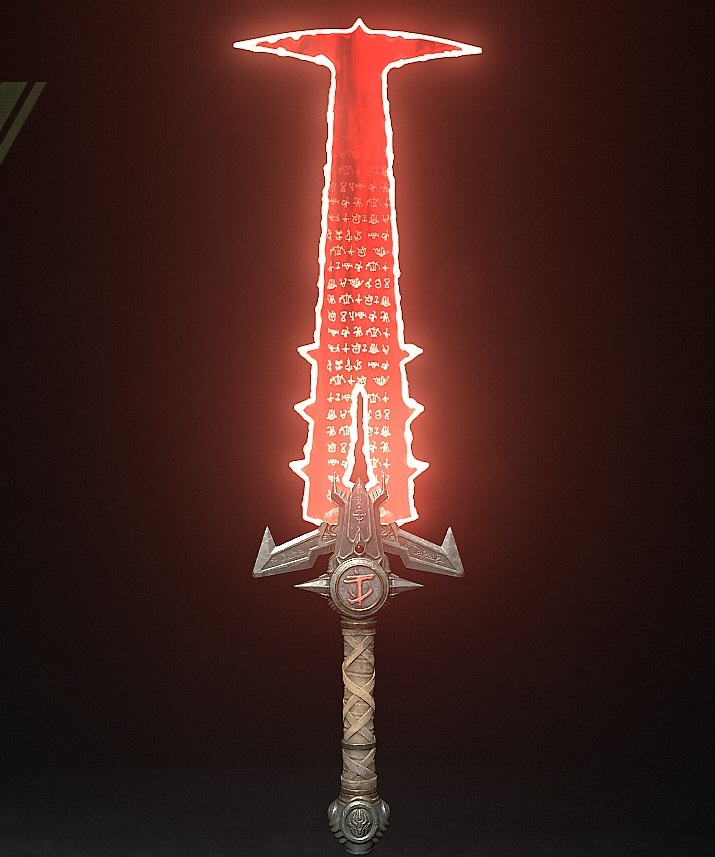
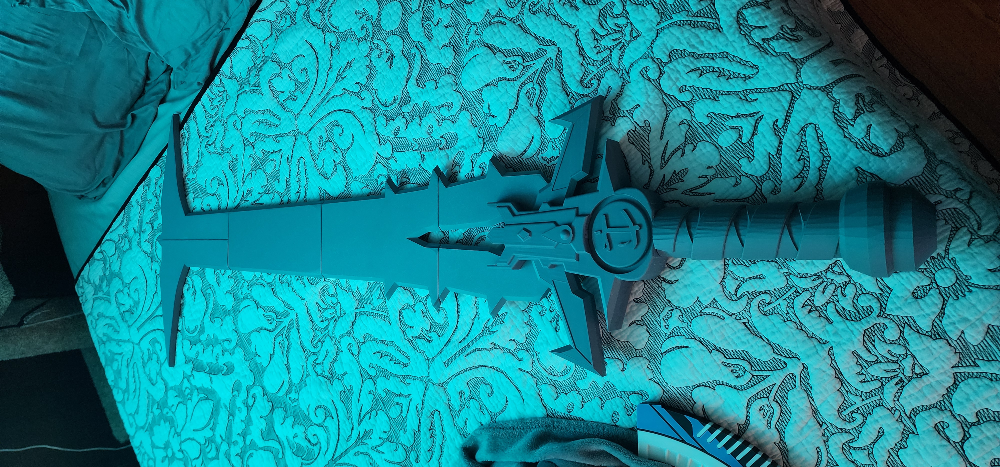
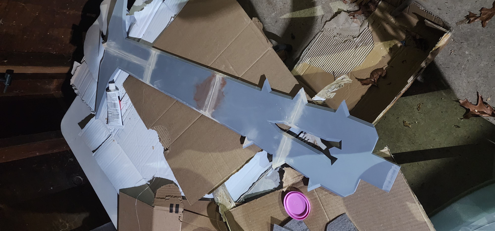
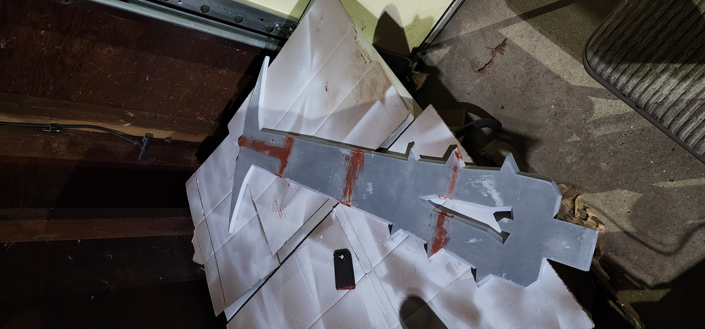
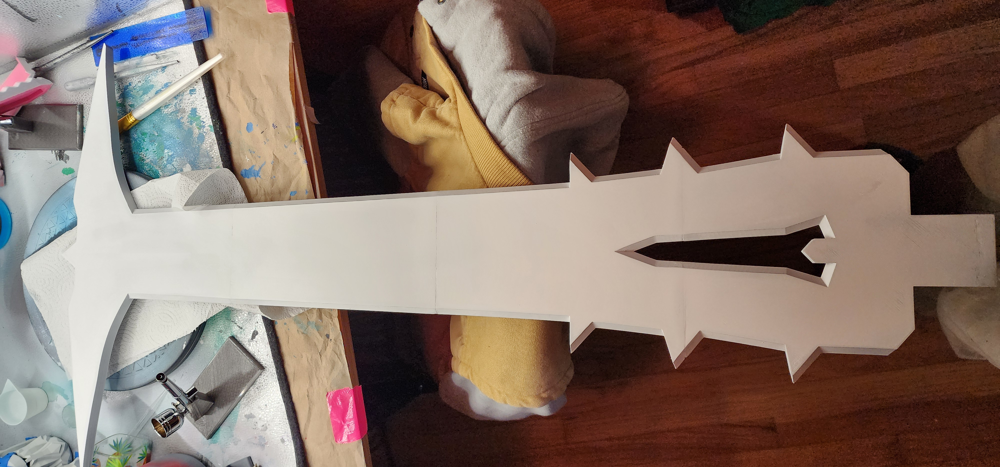
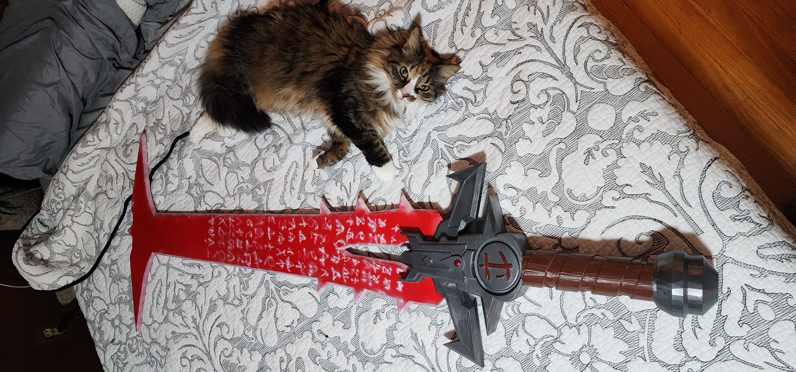

The Crucible from "DOOM Eternal"
November 2025

This project was sitting in my to-do pile for way too long. While I wish I put more time into it to make it look better, it's more work than it's worth. This is because this model is for myself and it is just going to sit on my wall and collect dust.
During this project, I got my first experience using a Milwaukee M12 Detail Sander, along with using Bondo spot glazing putty.
Additionally, I discovered some flaws with the model that I will take into consideration when I eventually try to export game models for myself. This model doesn't look like a game-rip, but a serious concern with this model is that the blade has no holes for brass rods to increase stability. This would basically render this useless to anyone trying to cosplay with it, which is an audience I may try to work with.
I also encountered a problem with my airbrush paint (the white on the blade) not flowing properly. I am pretty certain this is due to my garage being too cold and I didn't have the space to work on this in a heated area. This made adding the runes to the blade much harder, and unfortunately it does not meet the standard of quality I hope to achieve. I did not glue the blade into the hilt, so I could always try to fix it in the future.
Lastly, the blade handle is very low poly / faceted, which makes it look very unnatural. That could maybe be fixed with lots of sanding / filling, but once again, this model is more work than it's worth.
Extra pictures from the design process





